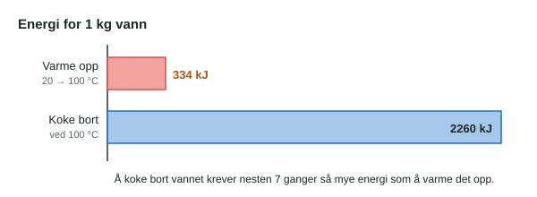

Varme og energi i prosesser
I et prosessanlegg varmes tanker opp, væsker kokes inn, og brennere fyres med gass eller olje. For å drifte anlegget må du kunne regne ut hvor mye energi det går med, og hvor stor effekt utstyret må ha.
Denne siden bygger på Temperatur og varme og Energi, arbeid og effekt. Les dem først hvis du er usikker på forskjellen mellom temperatur og varme, eller mellom energi og effekt.
Å varme opp et stoff
Energien som trengs for å varme opp et stoff, avhenger av tre ting:
- massen \( m \): det trengs dobbelt så mye energi for å varme 2 kg som 1 kg.
- temperaturendringen \( \Delta T \) («delta T»): sluttemperatur minus starttemperatur.
- stoffet: noen stoffer krever mer energi enn andre. Dette kalles spesifikk varmekapasitet, \( c \).
Sammen gir de formelen
\[ Q = m \cdot c \cdot \Delta T \]
der \( Q \) er varmen i kJ, \( m \) er massen i kg, \( c \) er i kJ/(kg·°C) og \( \Delta T \) er i °C. En temperaturendring er like stor i °C og i K, så det spiller ingen rolle hvilken av dem du bruker for \( \Delta T \).
Legg merke til at \( Q \) her står for varme. På siden Strømning i rør står \( Q \) for volumstrøm. Det er to forskjellige størrelser med samme bokstav.
| Stoff | Spesifikk varmekapasitet, \( c \) (kJ/(kg·°C)) |
|---|---|
| vann | 4,18 |
| etanol | ca. 2,4 |
| olje (mineralolje) | ca. 2,0 |
| luft | ca. 1,0 |
| aluminium | ca. 0,90 |
| stål | ca. 0,49 |
Noen steder, for eksempel i Kjemiske prinsipper, står \( c \) i J/(g·°C). Tallet blir det samme: 4,18 J/(g·°C) = 4,18 kJ/(kg·°C).
Vann har svært høy spesifikk varmekapasitet. Det tar opp mye varme for hver grad det blir varmere. Derfor er vann godt egnet som kjølevann og som varmemedium.
Oppgave: En tank inneholder 500 kg vann på 15 °C. Vannet skal varmes til 80 °C med et elektrisk varmeelement på 30 kW. Hvor mye energi trengs, og hvor lang tid tar det hvis vi ser bort fra varmetap?
Løsning:
- Det vi vet: \( m = 500 \text{ kg} \), \( c = 4{,}18 \text{ kJ/(kg·°C)} \), \( \Delta T = 80 \text{ °C} - 15 \text{ °C} = 65 \text{ °C} \).
- Energi: \( Q = 500 \text{ kg} \cdot 4{,}18 \text{ kJ/(kg·°C)} \cdot 65 \text{ °C} = 135\,850 \text{ kJ} \approx 136 \text{ MJ} \)
- Tid: effekt er energi per tid, \( P = \dfrac{Q}{t} \), så \( t = \dfrac{Q}{P} = \dfrac{135\,850 \text{ kJ}}{30 \text{ kJ/s}} = 4528 \text{ s} \). (1 kW = 1 kJ/s.)
- Gjør om til minutter: \( 4528 \text{ s} / 60 = 75{,}5 \text{ min} \).
Svar: Det trengs ca. 136 MJ, og det tar ca. 75 minutter. I virkeligheten tar det litt lenger tid, fordi noe av varmen går tapt gjennom tankveggen. Det ser vi på i Varmetap og virkningsgrad.
Strømmer i et anlegg: fra kJ til kW
I et kontinuerlig anlegg strømmer væsken hele tiden. Da regner vi ikke med en fast masse, men med massestrøm \( \dot{m} \): hvor mange kilo som går forbi per sekund (kg/s). Massestrøm kjenner du fra Strømning i rør.
Setter vi massestrøm inn i formelen i stedet for masse, får vi energi per sekund, altså effekt. Vi kaller det varmeeffekt:
\[ P = \dot{m} \cdot c \cdot \Delta T \]
Med \( \dot{m} \) i kg/s og \( c \) i kJ/(kg·°C) blir svaret i kJ/s, som er det samme som kW.
Oppgave: 0,50 kg/s vann skal varmes fra 20 °C til 60 °C før det går inn i en reaktor. Hvor stor varmeeffekt trengs?
- Det vi vet: \( \dot{m} = 0{,}50 \text{ kg/s} \), \( c = 4{,}18 \text{ kJ/(kg·°C)} \), \( \Delta T = 60 \text{ °C} - 20 \text{ °C} = 40 \text{ °C} \).
- \( P = 0{,}50 \text{ kg/s} \cdot 4{,}18 \text{ kJ/(kg·°C)} \cdot 40 \text{ °C} = 83{,}6 \text{ kW} \)
Svar: Det trengs ca. 84 kW.
Strømmer i anlegg oppgis ofte i kg/h. Del på 3600 for å få kg/s, for det er 3600 sekunder i en time. Eksempel: 1800 kg/h = 1800 / 3600 = 0,50 kg/s.
Å koke bort væske: fordampingsvarme
Når vann har nådd kokepunktet, stiger ikke temperaturen mer selv om du fortsetter å varme. All energien går da med til å gjøre vann om til damp. Energien som trengs for å fordampe 1 kg av et stoff ved kokepunktet, kalles fordampingsvarme. For vann ved 100 °C er den ca. 2260 kJ/kg.
For en fast mengde væske regner vi slik:
\[ Q = m \cdot L \]
der \( L \) er fordampingsvarmen i kJ/kg. For en strøm bruker vi \( \dot{m} \) i stedet for \( m \), og da blir svaret i kW.

En inndamper er en beholder der en løsning varmes slik at vannet koker bort og løsningen blir mer konsentrert.
Oppgave: I en inndamper kokes 750 kg/h vann bort fra en saltløsning. Løsningen kommer inn ved kokepunktet. Hvor stor varmeeffekt trengs for å fordampe vannet?
- Gjør om til kg/s: \( \dot{m} = \dfrac{750 \text{ kg/h}}{3600 \text{ s/h}} = 0{,}2083 \text{ kg/s} \)
- \( P = \dot{m} \cdot L = 0{,}2083 \text{ kg/s} \cdot 2260 \text{ kJ/kg} = 471 \text{ kW} \)
Svar: Det trengs ca. 470 kW. Kommer løsningen inn kaldere, trengs det i tillegg energi til å varme den opp til kokepunktet.
Hvor mye vann som må dampes bort, regner du ut med en massebalanse, slik du gjorde på siden Separasjon.
Det motsatte skjer når damp kondenserer til vann. Da gir dampen fra seg den samme energien igjen, 2260 kJ per kilo. Derfor er damp et mye brukt varmemedium i industrien. Den gir mye energi per kilo, og den gir den fra seg ved en jevn temperatur. At fordamping tar opp energi og kondensering gir fra seg energi, lærte du om i Energi i reaksjoner.
Energi fra brensel: brennverdi
Mange anlegg får varme fra en brenner eller en kjel. Hvor mye energi du får fra 1 kg brensel, kalles brennverdi, og den oppgis i MJ/kg. Hvordan den kan regnes ut fra reaksjonsligningen, lærte du i Energi i reaksjoner.
| Brensel | Brennverdi (MJ/kg) |
|---|---|
| naturgass (metan) | ca. 50 |
| propan | ca. 46 |
| diesel og fyringsolje | ca. 43 |
| ved (lufttørket) | ca. 15 |
Verdiene gjelder når vannet i røykgassen går ut som damp, slik det gjør i en vanlig kjel.
Oppgave: En brenner bruker 10 kg naturgass per time. Hvor stor effekt gir den?
- Energi per time: \( 10 \text{ kg/h} \cdot 50 \text{ MJ/kg} = 500 \text{ MJ/h} \)
- Gjør om til kJ per sekund: \( \dfrac{500\,000 \text{ kJ}}{3600 \text{ s}} = 139 \text{ kJ/s} = 139 \text{ kW} \)
Svar: Brenneren gir ca. 140 kW. Ikke all denne energien kommer fram til prosessen. Noe forsvinner med den varme røykgassen.
Damp og varmt vann gir alvorlige brannskader. Damp er farligere enn vann med samme temperatur. Når dampen treffer huden, kondenserer den og gir fra seg fordampingsvarmen i tillegg. Bruk verneutstyr, og åpne aldri en ventil, et lokk eller en flens på et damp- eller varmtvannssystem før det er trykkavlastet og kjølt ned. Varme rør og tanker skal være isolert eller merket.
Test deg selv
1. Hva trenger du å vite for å regne ut hvor mye energi som trengs for å varme opp en væske?
- bare massen og sluttemperaturen
- massen, den spesifikke varmekapasiteten og temperaturendringen
- volumet og trykket
Formelen er Q = m · c · ΔT. Du trenger massen, hvilket stoff det er (c), og hvor mange grader det skal varmes.
2. Hvor mye energi trengs for å gjøre 2,0 kg vann 10 °C varmere?
- 8,4 kJ
- 20 kJ
- 84 kJ
Q = 2,0 kg · 4,18 kJ/(kg·°C) · 10 °C = 83,6 kJ ≈ 84 kJ.
3. Du regner med massestrøm i kg/s og c i kJ/(kg·°C). Hvilken enhet får svaret?
- kJ
- kW
- kWh
kg/s · kJ/(kg·°C) · °C = kJ/s, og 1 kJ/s er 1 kW. Svaret er en effekt.
4. Hvorfor bruker en inndamper så mye energi?
- Fordi saltet må varmes opp til over 100 °C.
- Fordi det trengs mye energi for å gjøre vann om til damp.
- Fordi vann har lav spesifikk varmekapasitet.
Fordampingsvarmen til vann er ca. 2260 kJ/kg. Det er nesten 7 ganger så mye som det trengs for å varme vannet fra 20 til 100 °C.
5. En kjel bruker 1,0 kg fyringsolje per time. Brennverdien er 43 MJ/kg. Omtrent hvor stor effekt gir kjelen?
- 12 kW
- 43 kW
- 720 kW
43 MJ per time = 43 000 kJ / 3600 s = 11,9 kJ/s ≈ 12 kW.
Ordliste
| Begrep | Forklaring | Engelsk |
|---|---|---|
| spesifikk varmekapasitet | Hvor mye energi som trengs for å varme 1 kg av et stoff 1 grad. | |
| massestrøm | Hvor mange kilo som strømmer forbi per tid, for eksempel i kg/s eller kg/h. | mass flow rate |
| varmeeffekt | Hvor mye varme som tilføres eller føres bort per sekund. Den måles i kW. | heat duty |
| fordampingsvarme | Energien som trengs for å gjøre 1 kg væske om til damp ved kokepunktet. Den samme energien gis tilbake når dampen kondenserer. | |
| brennverdi | Hvor mye energi du får når 1 kg brensel brenner. Den oppgis i MJ/kg. | calorific value |
Les mer
- Temperatur og varme og Energi, arbeid og effekt i dette temaet.
- Energi i reaksjoner i Kjemiske prinsipper.
- Neste side: Gasser: trykk, volum og temperatur.
- Varmevekslere og varmetap kommer i emnet Energi i prosessindustrien.
Om kildene: Teksten, eksemplene og figuren på denne siden er laget for dette nettstedet. Tallene for varmekapasitet, fordampingsvarme og brennverdi er avrundede tabellverdier. Siden bygger på undervisningsopplegg i kjemiprosess- og laboratoriefag ved Sauda vgs, som er utarbeidet med utgangspunkt i blant annet Kjemien stemmer, Laboranten og åpne nettkilder.